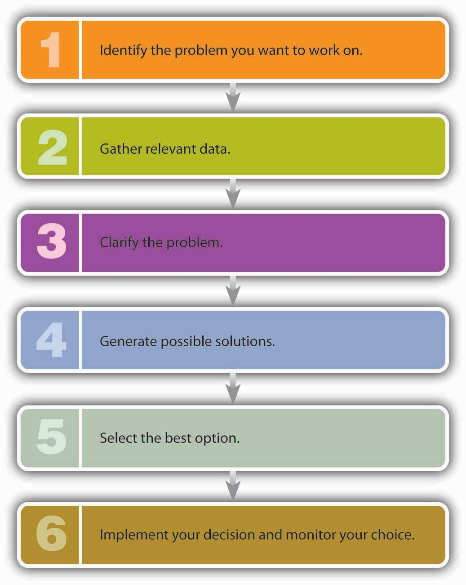

Consider this scenario. You’re about halfway through the semester and ready for your first round of midterms. You open up your class notes and declare them “pathetic.” You regret scribbling everything so carelessly (and skipping class so many times). You wish you had better notes. That’s when it hits you: What if there was a note-taking service on campus? When you were ready to study for a big test, you could buy complete (and completely legible) class notes. You’ve heard that there are class-notes services at some larger schools, but there’s no such thing on your campus. So you ask yourself, why don’t I start a note-taking business? My upcoming set of exams may not be salvageable, but after that, I’d always have great notes. And while I was at it, I could learn how to manage a business (isn’t that what majoring in business is all about?).
So you sit down to work on your great business idea. First, you’ll hire a bunch of students to take class notes and type them out. Then the notetakers will e-mail the notes to your assistant, who’ll get them copied (on a special type of blue paper that can’t be duplicated). The last step will be assembling packages of notes and, of course, selling them. You decide to name your company “Notes-4-You.”
It sounds like a great idea, but you’re troubled by one question: Why does this business need you? Do the notetakers need a boss? Couldn’t they just sell the notes themselves? This process could work, but it would probably work a lot better if there was someone to oversee the operations: a manager—someone like you—to make sure that the operations involved in preparing and selling notes were performed in both an effective and an efficient manner. You’d make the process effective by ensuring that the right things got done and that they all contributed to the success of the enterprise. You’d make the process efficient by ensuring that activities were performed in the right way and used the fewest possible resources. That’s the job that you perform as a managerIndividual in an organization who is responsible for making a group of people more effective and efficient.: making a group of people more effective and efficient with you than they would be without you.

Managerial Efficiency and Effectiveness
You’ll accomplish this task through managementProcess of planning for, organizing, directing, and controlling a company’s resources so that it can achieve its goals.: the process of planning, organizing, directing, and controlling resources to achieve specific goals. A plan enables you to take your business concept beyond the idea stage. It does not, however, get the work done. You have to organize things if you want your plan to become a reality. You have to put people and other resources in place to make things happen. And because your note-taking venture is supposed to be better off with you in charge, you need to be a leader who can motivate your people to do well. Finally, to know whether things are in fact going well, you’ll have to control your operations—that is, measure the results and compare them with the results that you laid out in your plan. Figure 6.1 "The Role of Planning" gives you a good idea of the interrelationship between planning and the other functions that managers perform.
Figure 6.1 The Role of Planning

If you visit any small or large company, not-for-profit organization, or government agency, you’ll find managers doing the same things you’d be doing to run your note-taking business—planning, organizing, directing, and controlling. In the rest of the chapter, we’ll look at these four interrelated functions in detail.
(AACSB) Analysis
Consider the things that the principal of your old high school had to do to ensure that the school met the needs of its students. Identify these activities and group them by the four functions of management: planning, organizing, directing, and controlling.
Without a plan, it’s hard to succeed at anything. The reason is simple: if you don’t know where you’re going, you can’t really move forward. Successful managers decide where they want to be and then figure out how to get there. In planningProcess of setting goals and determining the best way to achieve them., managers set goals and determine the best way to achieve them. As a result of the planning process, everyone in the organization knows what should be done, who should do it, and how it should be done.
Coming up with an idea—say, starting a note-taking business—is a good start, but it’s only a start. Planning for it is a step forward. Planning begins at the highest level and works its way down through the organization. Step one is usually called strategic planningProcess of establishing an overall plan or course of action for an organization., which is the process of establishing an overall course of action. To begin this process, you should ask yourself a couple of very basic questions: Why, for example, does the organization exist? What value does it create? Sam Walton posed these questions in the process of founding Wal-Mart: his new chain of stores would exist to offer customers the lowest prices with the best possible service.Lee Scott, “Three Basic Beliefs,” About Wal-Mart, http://www.walmartstores.com/GlobalWMStoresWeb/navigate.do?catg=252 (accessed May 3, 2006).
After you’ve identified the purpose of your company, you’re ready to take the remaining steps in the strategic-planning process:
In the next few sections, we’ll examine these components of the strategic-planning process.
As we saw in an earlier chapter, the mission statement describes the purpose of your organization—the reason for its existence. It tells the reader what the organization is committed to doing. It can be very concise, like the one from Mary Kay Inc. (the cosmetics company): “To enrich the lives of women around the world.”Mary Kay Inc. Web site, Employment at Mary Kay section, http://www.marykay.com/company/jobsatmarykay/default.aspx (accessed September 21, 2011). Or it can be as detailed as the one from Harley-Davidson: “We fulfill dreams inspired by the many roads of the world by providing extraordinary motorcycles and customer experiences. We fuel the passion for freedom in our customers to express their own individuality.”Harley-Davidson Web site, Company/Student Center section, http://www.harley-davidson.com/en_GB/Content/Pages/Company/company.html?locale=en_GB&bmLocale=enGB (accessed September 21, 2011).
What about Notes-4-You? What should your mission statement say? A simple, concise mission statement for your enterprise could be the following: “To provide high-quality class notes to college students.” On the other hand, you could prepare a more detailed statement that explains what the company is committed to doing, who its customers are, what its focus is, what goods or services it provides, and how it serves its customers. In that case, your mission statement might be the following:
“Notes-4-You is committed to earning the loyalty of college students through its focus on customer service. It provides high-quality, dependable, competitively priced class notes that help college students master complex academic subjects.”
Having defined your mission, your next step is to ask, what does this organization stand for? What values will define it? What principles should guide our actions as we build and operate the business? In Chapter 2 "Business Ethics and Social Responsibility", we explained that the small set of guiding principles that you identify as crucial to your company are known as core values—fundamental beliefs about what’s important and what is and isn’t appropriate in conducting company activities. Core values affect the overall planning processes and operations. At Volvo, for example, three core values—safety, quality, and environmental care—define the firm’s “approach to product development, design and production.”Volvo Group Global, http://www.volvogroup.com/group/global/en-gb/volvo%20group/our_brand/volvo/Pages/volvo.aspx (accessed September 21, 2011). Core values should also guide the behavior of every individual in the organization. Coca-Cola, for instance, reports that its stated core values—leadership, collaboration, integrity, accountability, passion, diversity and quality—tell employees exactly what behaviors are acceptable.The Coca-Cola Company, “Code of Business Conduct,” http://www.thecoca-colacompany.com/ourcompany/mission_vision_values.html (accessed September 21, 2011). How do companies communicate core values to employees and hold them accountable for putting those values into practice? They link core values to performance evaluations and compensation.
In choosing core values for Notes-4-You, you’re determined not to fall back on some list of the world’s most popular core values: ethics/integrity, accountability, respect for others, and open communication.“Most Executives Say Ethics, Integrity Are Among Core Corporate Values,” allBusiness, http://www.allbusiness.com/reports-reviews-sections/polls-surveys/11427605-1.html (accessed October 9, 2011). You want yours to be unique to Notes-4-You. After some thought, you settle on teamwork, trust, and dependability. Why these three? As you plan your business, you realize that it will need a workforce that functions as a team, trusts each other, and can be depended on to satisfy customers. In building your workforce, you’ll seek employees who’ll embrace these values.
The next step in the strategic-planning process is to assess your company’s fit with its environment. A common approach to environmental analysis is matching the strengths of your business with the opportunities available to it. It’s called SWOT analysisApproach used to assess a company’s fit with its environment by analyzing its strengths, weaknesses, opportunities, and threats. because it calls for analyzing an organization’s Strengths, Weaknesses, Opportunities, and Threats. It begins with an examination of external factors that could influence the company in either a positive or a negative way. These could include economic conditions, competition, emerging technologies, laws and regulations, and customers’ expectations.
One purpose of assessing the external environment is to identify both opportunities that could benefit the company and threats to its success. For example, a company that manufactures children’s bicycle helmets would view a change in federal law requiring all children to wear helmets as an opportunity. The news that two large sports-equipment companies were coming out with bicycle helmets would be a threat.
The next step is to evaluate the company’s strengths and weaknesses. Strengths might include a motivated workforce, state-of-the-art technology, impressive managerial talent, or a desirable location. The opposite of any of these strengths (poor workforce, obsolete technology, incompetent management, or poor location) could signal a potential weakness. Armed with a good idea of external opportunities and threats, as well as internal strengths and weaknesses, managers want to capitalize on opportunities by taking advantage of organizational strengths. Likewise, they want to protect the organization from both external threats and internal weaknesses.
Let’s start with our strengths. Now that we know what they are, how do we match them with our available opportunities (while also protecting ourselves from our threats and overcoming our weaknesses)? Here’s a possibility: By providing excellent service and price while we’re still small (with few customers and low costs), we can solidify our position on campus. When the market grows (as it will, because of the increase in the number of classes—especially those at 8:00 a.m.—and increases in student enrollment), we’ll have built a strong reputation and will put ourselves in a position to grow. So even if a competitor comes to campus (a threat), we’ll be the preferred supplier of class notes. This strategy will work only if we make sure that our notetakers are dependable and that we don’t alienate the faculty or administration.
Your mission statement affirms what your organization is generally committed to doing, but it doesn’t tell you how to do it. So the next step in the strategic-planning process is establishing goals and objectives. GoalsMajor accomplishments that a company wants to achieve over a long period of time. are major accomplishments that the company wants to achieve over a long period (say, five years). ObjectivesIntermediate-term performance targets that direct the activities of an organization toward the attainment of a goal. are shorter-term performance targets that direct the activities of the organization toward the attainment of a goal. They should be clearly stated, attainable, and measurable: they should give target dates for the completion of tasks and stipulate who’s responsible for taking necessary actions.Scott Safranski and Ik-Whan Kwon, “Strategic Planning for the Growing Business” (1991), U.S. Small Business Administration, http://www.sbaonline.sba.gov/idc/groups/public/documents/sba_homepage/serv_pubs_eb_pdf_eb6.pdf (accessed October 9, 2011).
An organization will have a number of goals and related objectives. Some will focus on financial measures, such as profit maximization and sales growth. Others will target operational efficiency or quality control. Still others will govern the company’s relationships with its employees, its community, its environment, or all three.
Finally, goals and objectives change over time. As a firm reassesses its place in its business environment, it rethinks not only its mission but also its approach to fulfilling it. The reality of change was a major theme when the late McDonald’s CEO Jim Cantalupo explained his goal to revitalize the company:
“The world has changed. Our customers have changed. We have to change too. Growth comes from being better, not just expanding to have more restaurants. The new McDonald’s is focused on building sales at existing restaurants rather than on adding new restaurants. We are introducing a new level of discipline and efficiency to all aspects of the business and are setting a new bar for performance.”McDonald’s Corp., “McDonald’s Announces Plans to Revitalize Its Worldwide Business and Sets New Financial Targets,” Franchise Bison, http://www.bison.com/press_mcdonalds_04072003 (accessed October 8, 2011).
This change in focus was accompanied by specific performance objectives—annual sales growth of 3 to 5 percent and income growth of 6 to 7 percent at existing restaurants, plus a five-point improvement (based on customer surveys) in speed of service, friendliness, and food quality.
In setting strategic goals and performance objectives for Notes-4-You, you should keep things simple. Because you know you need to make money to stay in business, you could include a financial goal (and related objectives). Your mission statement promises “high-quality, dependable, competitively priced class notes,” so you could focus on the quality of the class notes that you’ll be taking and distributing. Finally, because your mission is to serve students, one goal could be customer oriented. When all’s said and done, your list of goals and objectives might look like this:
Goal 1: Achieve a 10 percent return on profits in your first five years.
Goal 2: Produce a high-quality product.
Goal 3: Attain 98 percent customer satisfaction by the end of your fifth year.
The planning process begins at the top of the organization, where upper-level managers create a strategic plan, but it doesn’t end there. The execution of the strategic plan involves managers at all levels.
The overall plan is broken down into more manageable, shorter-term components called tactical plansShort-term plans that specify the activities and resources needed to implement a company’s strategic plan.. These plans specify the activities and allocation of resources (people, equipment, money) needed to implement the overall strategic plan over a given period. Often, a long-range strategic plan is divided into several tactical plans; a five-year strategic plan, for instance, might be implemented as five one-year tactical plans.
The tactical plan is then broken down into various operational plansDetailed action steps to be taken by individuals or groups to implement tactical plans. that provide detailed action steps to be taken by individuals or groups to implement the tactical plan and, consequently, the strategic plan. Operational plans cover only a brief period—say, a week or a month. At Notes-4-You, for example, notetakers might be instructed to turn in typed class notes five hours earlier than normal on the last day of the semester (an operational guideline). The goal is to improve the customer-satisfaction score on dependability (a tactical goal) and, as a result, to earn the loyalty of students through attention to customer service (a strategic goal).
Even with great planning, things don’t always turn out the way they’re supposed to. Perhaps your plans were flawed, or maybe you had great plans but something in the environment shifted unexpectedly. Successful managers anticipate and plan for the unexpected. Dealing with uncertainty requires contingency planning and crisis management.
With contingency planningProcess of identifying courses of action to be taken in the event that a business is adversely affected by a change., managers identify those aspects of the business that are most likely to be adversely affected by change. Then, they develop alternative courses of action in case an anticipated change does occur. You probably do your own contingency planning: for example, if you’re planning to take in a sure-fire hit movie on its release date, you may decide on an alternative movie in case you can’t get tickets to your first choice.
Organizations also face the risk of encountering crises that require immediate attention. Rather than waiting until such a crisis occurs and then scrambling to figure out what to do, many firms practice crisis managementAction plans that outline steps to be taken by a company in case of a crisis.. Some, for instance, set up teams trained to deal with emergencies. Members gather information quickly and respond to the crisis while everyone else carries out his or her normal duties. The team also keeps the public, the employees, the press, and government officials informed about the situation and the company’s response to it.Brian Perkins, “Defining Crisis Management,” Wharton Alumni Magazine, Summer 2000, http://whartonmagazine.com/issues/summer-2000/reunion-2000/ (accessed October 8, 2011).
An example of how to handle crisis management involves Wendy’s. After learning that a woman claimed she found a fingertip in a bowl of chili she bought at a Wendy’s restaurant in San Jose, California, the company’s public relations team responded quickly. Within a few days, the company announced that the finger didn’t come from an employee or a supplier. Soon after, the police arrested the woman and charged her with attempted grand larceny for lying about how the finger got in her bowl of chili and trying to extort $2.5 million from the company. But the crisis wasn’t over for Wendy’s. The incident was plastered all over the news as a grossed-out public sought an answer to the question, “Whose finger is (or was) it?” A $100,000 reward was offered by Wendy’s to anyone with information that would help the police answer this question. The challenge Wendy’s faced was how to entice customers to return to its fifty San Francisco–area restaurants (where sales had plummeted) while keeping a low profile nationally. It accomplished this by giving out free milkshakes and discount coupons to customers in the affected regions and, to avoid calling attention to the missing finger, by making no changes in its national advertising. The crisis-management strategy worked and the story died down (though it flared up temporarily when the police arrested the woman’s husband, who allegedly bought the finger from a coworker who had severed it in an accident months earlier).Stewart Elliott, “Wendy’s Gets a Break, but Still Has Work Ahead of It,” The New York Times, April 29, 2005, http://www.nytimes.com/2005/04/29/business/media/29adco.html?ei=5088&en=bb0e017145269f5e& (accessed October 8, 2011).
The response to the BP oil spill by its former CEO, Tony Hayward, is an example of poor crisis management.
Even with crisis-management plans in place, however, it’s unlikely that most companies will emerge from a damaging or potentially damaging episode as unscathed as Wendy’s did. For one thing, the culprits in the Wendy’s case were caught, and the public is willing to forgive an organization it views as a victim. Given the current public distrust of corporate behavior, however, companies whose reputations have suffered due to questionable corporate judgment don’t fare as well. These companies include the international oil company, BP, whose CEO, Tony Hayward, did a disastrous job handling the crisis created when a BP controlled oil rig exploded in the Gulf Coast killing eleven workers and creating the largest oil spill in U.S. history. Hayward’s lack of sensitivity will be remembered forever; particularly his response to a reporter’s question on what he would tell those whose livelihoods were ruined: “We’re sorry for the massive disruption it’s caused their lives. There’s no one who wants this over more than I do. I would like my life back.” His comment was obviously upsetting to the families of the eleven men who lost their lives on the rig and had no way to get their lives back.“Embattled BP Chief: I Want My Life Back,” The Times of London, May 31, 2010.
Then, there are the companies at which executives have crossed the line between the unethical to the downright illegal—Arthur Andersen, Enron, and Bernard L. Madoff Investment Securities, to name just a few. Given the high risk associated with a crisis, it should come as no surprise that contemporary managers spend more time anticipating crises and practicing their crisis-management responses.
Then, management is ready to take the remaining steps in the strategic planning process:
Without a plan, it’s hard to succeed. Successful managers set goals and determine the best ways to reach them. Successful students do the same thing. Develop a strategic plan for succeeding in this course that includes the following steps:
If you were the CEO of a large organization, what core values would you want to guide the behavior of your employees? First, assume that you oversee a large company that manufactures and sells medical devices, such as pacemakers, defibrillators, and insulin pumps. Your company was a pioneer in bringing these products to the market. Identify six core values that you would want to guide the behavior of your employees. For each core value, be sure to do the following:
Now, repeat the process. This time, however, assume that you’re the CEO of a company that rents movies and games at more than eight thousand outlets across the country.
Now that you’ve developed a strategic plan for Notes-4-You, you need to organize your company so that it can implement your plan. A manager engaged in organizingManagement process of allocating resources to achieve a company’s plans. allocates resources (people, equipment, and money) to achieve a company’s plans. Successful managers make sure that all the activities identified in the planning process are assigned to some person, department, or team and that everyone has the resources needed to perform assigned activities.
A typical organization has several layers of management. Think of these layers as forming a pyramid like the one in Figure 6.3 "Levels of Management", with top managers occupying the narrow space at the peak, first-line managers the broad base, and middle-managers the levels in between. As you move up the pyramid, management positions get more demanding, but they carry more authority and responsibility (along with more power, prestige, and pay). Top managers spend most of their time in planning and decision making, while first-line managers focus on day-to-day operations. For obvious reasons, there are far more people with positions at the base of the pyramid than there are with jobs at the other two levels (as you get to the top, there are only a few positions). Let’s look at each management level in more detail.
Figure 6.3 Levels of Management

Top managersThose at the top of the management hierarchy who are responsible for the health and performance of the organization. are responsible for the health and performance of the organization. They set the objectives, or performance targets, designed to direct all the activities that must be performed if the company is going to fulfill its mission. Top-level executives routinely scan the external environment for opportunities and threats, and they redirect company efforts when needed. They spend a considerable portion of their time planning and making major decisions. They represent the company in important dealings with other businesses and government agencies, and they promote it to the public. Job titles at this level typically include chief executive officer (CEO), chief financial officer (CFO), chief operating officer (COO), president, and vice president.
As the name implies, middle managersThose in the middle of the management hierarchy who report to top management and oversee the activities of first-line managers. are in the “middle” of the management hierarchy: They report to top management and oversee the activities of first-line managers. They’re responsible for developing and implementing activities and allocating the resources needed to achieve the objectives set by top management. Common job titles include operations manager, division manager, plant manager, and branch manager.
First-line managersThose at the bottom of the management hierarchy who supervise employees and coordinate their activities. supervise employees and coordinate their activities to make sure that the work performed throughout the company is consistent with the plans of both top and middle management. They’re less involved in planning than higher-level managers and more involved in day-to-day operations. It’s at this level that most people acquire their first managerial experience. The job titles vary considerably but include such designations as department head, group leader, office manager, foreman, and supervisor.
Let’s take a quick survey of the management hierarchy at Notes-4-You. As president, you are, of course, a member of top management, and you’re responsible for the overall performance of your company. You spend much of your time setting objectives, or performance targets, to ensure that the company meets the goals you’ve set for it—increased sales, higher-quality notes, and timely distribution.
Several middle managers report to you, including your operations manager. As a middle manager, this individual focuses on implementing two of your objectives: producing high-quality notes and distributing them to customers in a timely manner. To accomplish this task, the operations manager oversees the work of two first-line managers—the note-taking supervisor and the copying supervisor. Each first-line manager supervises several non-managerial employees to make sure that their work is consistent with the plans devised by top and middle management.
The organizing process raises some important questions: What jobs need to be done? Who does what? Who reports to whom? What are the formal relationships among people in the organization? You provide answers to these questions by developing an organizational structureOrganizational arrangement of jobs in an organization that’s most appropriate for the company at a specific point in time.: an arrangement of positions that’s most appropriate for your company at a specific point in time. Remember, given the rapidly changing environment in which businesses operate, a structure that works today might be outdated tomorrow. That’s why you hear so often about companies restructuringProcess of altering an existing organizational structure to become more competitive under changing conditions.—altering existing organizational structures to become more competitive under conditions that have changed. In building an organizational structure, you engage in two activities: job specialization (dividing tasks into jobs) and departmentalization (grouping jobs into units). We’ll now see how these two processes are accomplished.
The first step in designing an organizational structure is twofold:
This twofold process of organizing activities into clusters of related tasks that can be handled by certain individuals or groups is called specializationProcess of organizing activities into clusters of related tasks that can be handled by specific individuals or groups.. Its purpose is to improve efficiency.
Would specialization make Notes-4-You more efficient? You could have each employee perform all tasks entailed by taking and selling notes. Each employee could take notes in an assigned class, type them up, get them copied, and sell them outside the classroom at the start of the next class meeting. The same person would keep track of all sales and copying costs and give any profit—sales minus copying costs minus compensation—to you. The process seems simple, but is it really efficient? Will you earn the maximum amount of profit? Probably not. Even a company as small as Notes-4-You can benefit from specialization. It would function more efficiently if some employees specialized in taking notes, others in copying and packaging them, and still others in selling them. Higher-level employees could focus on advertising, accounting, finance, and human resources.
Obviously, specialization has advantages. In addition to increasing efficiency, for example, it results in jobs that are easier to learn. But it has disadvantages, too. Doing the same thing over and over bores people and will eventually leave employees dissatisfied with their jobs. Before long, you’ll notice decreased performance and increased absenteeism and turnover.
The next step in designing an organizational structure is departmentalizationProcess of grouping specialized jobs into meaningful units.—grouping specialized jobs into meaningful units. Depending on the organization and the size of the work units, they may be called divisions, departments, or just plain groups. Traditional groupings of jobs result in different organizational structures, and for the sake of simplicity, we’ll focus on two types—functional and divisional organizations.
A functional organizationForm of business organization that groups together people who have comparable skills and perform similar tasks. groups together people who have comparable skills and perform similar tasks. This form of organization is fairly typical for small to medium-size companies, which group their people by business functions: accountants are grouped together, as are people in finance, marketing and sales, human resources, production, and research and development. Each unit is headed by an individual with expertise in the unit’s particular function. The head of an accounting department, for example, will be a senior accountant; the head of a hospital nursing unit will obviously be an experienced nurse. This structure is also appropriate for nonprofits. Think about your school, for instance: mathematics teachers are in the math department, history teachers are in the history department, those who run athletic programs are in the athletic department, and librarians work at the library.
If Notes-4-You adopted a functional approach to departmentalization, jobs might be grouped into four clusters:
There are a number of advantages to the functional approach. The structure is simple to understand and enables the staff to specialize in particular areas; everyone in the marketing group would probably have similar interests and expertise. But homogeneity also has drawbacks: it can hinder communication and decision making between units and even promote interdepartmental conflict. The marketing department, for example, might butt heads with the accounting department because marketers want to spend as much as possible on advertising, while accountants want to control costs. Marketers might feel that accountants are too tight with funds, and accountants might regard marketers as spendthrifts.
Large companies often find it unruly to operate as one large unit under a functional organizational structure. Sheer size makes it difficult for managers to oversee operations and serve customers. To rectify this problem, most large companies are structured as divisional organizationsForm of organization that groups people into several smaller, self-contained units, or divisions, which are accountable for their own performance. made up of several smaller, self-contained units, or divisions, which are accountable for their own performance. Each division functions autonomously because it contains all the functional expertise (production, marketing, accounting, finance, human resources) needed to meet its objectives. The challenge is to find the most appropriate way of structuring operations to achieve overall company goals. Toward this end, divisions can be formed according to products, customers, processes, or geography.
Product divisionOrganizational structure made up of divisions based on product lines. means that a company is structured according to its product lines. General Motors, for example, has four product-based divisions: Buick, Cadillac, Chevrolet, and GMC.Associated Press, “General Motors Rebuilds with 4 Divisions,” The Augusta Chronicle, October 7, 2010, http://chronicle.augusta.com/life/autos/2010-10-07/general-motors-rebuilds-4-divisions (accessed October 8, 2011). Each division has its own research and development group, its own manufacturing operations, and its own marketing team. This allows individuals in the division to focus all their efforts on the products produced by their division. A downside is that it results in higher costs as corporate support services (such as accounting and human resources) are duplicated in each of the four divisions.
Some companies prefer a customer divisionOrganizational structure that groups employees into customer-based business segments. structure because it enables them to better serve their various categories of customers. Thus, Johnson & Johnson’s two hundred or so operating companies are grouped into three customer-based business segments: consumer business (personal-care and hygiene products sold to the general public), pharmaceuticals (prescription drugs sold to pharmacists), and professional business (medical devices and diagnostics products used by physicians, optometrists, hospitals, laboratories, and clinics).Johnson & Johnson Services, “Business Segments,” http://www.jnj.com/connect/about-jnj/company-structure (accessed October 8, 2011).
If goods move through several steps during production, a company might opt for a process divisionOrganizational structure that groups people into operating units based on various stages in the production process. structure. This form works well at Bowater Thunder Bay, a Canadian company that harvests trees and processes wood into newsprint and pulp. The first step in the production process is harvesting and stripping trees. Then, large logs are sold to lumber mills and smaller logs chopped up and sent to Bowater’s mills. At the mill, wood chips are chemically converted into pulp. About 90 percent is sold to other manufacturers (as raw material for home and office products), and the remaining 10 percent is further processed into newspaper print. Bowater, then, has three divisions: tree cutting, chemical processing, and finishing (which makes newsprint).Northwest Forest Industry, Pulp and Paper Manufacturing, “From the Forest to the Office and Home: Bowater—A Case Study in Newsprint and Kraft Pulp Production,” Borealforest.org, http://www.borealforest.org/paper/index.htm (accessed October 8, 2011).
Geographical divisionOrganizational structure that groups people into divisions based on location. enables companies that operate in several locations to be responsive to customers at a local level. McDonald’s, for example, is organized according to the regions of the world in which it operates. In the United States, the national unit is further subdivided into three geographic operating divisions: east, west and central.“Franchising,” McDonald’s Corp., http://www.aboutmcdonalds.com/mcd/franchising/us_franchising/franchise_contacts.html (accessed October 8, 2011). (This approach might be appealing to Notes-4-You if it expands to serve schools around the country.)
There are pluses and minuses associated with divisional organization. On the one hand, divisional structure usually enhances the ability to respond to changes in a firm’s environment. If, on the other hand, services must be duplicated across units, costs will be higher. In addition, some companies have found that units tend to focus on their own needs and goals at the expense of the organization as a whole.
Once an organization has set its structure, it can represent that structure in an organization chartDiagram representing the interrelationships of positions within an organization.: a diagram delineating the interrelationships of positions within the organization. Having decided that Notes-4-You will adopt a functional structure, you might create the organization chart shown in Figure 6.5 "Organization Chart for Notes-4-You".
Figure 6.5 Organization Chart for Notes-4-You

Begin by putting yourself at the top of the chart, as the company’s president. Then fill in the level directly below your name with the names and positions of the people who work directly for you—your accounting, marketing, operations, and human resources managers. The next level identifies the people who work for these managers. Because you’ve started out small, neither your accounting manager nor your human resources manager will be currently managing anyone directly. Your marketing manager, however, will oversee one person in advertising and a sales supervisor (who, in turn, oversees the sales staff). Your operations manager will oversee two individuals—one to supervise notetakers and one to supervise the people responsible for making copies.
With these relationships in mind, you can now draw lines to denote reporting relationshipsPatterns of formal communication among members of an organization., or patterns of formal communication. Because four managers report to you, you’ll be connected to four positions; that is, you’ll have four direct “reports.” Your marketing and operations managers will each be connected to two positions and their supervisors to one position each. The organization chart shows that if a member of the sales staff has a problem, he or she will report it to the sales supervisor. If the sales supervisor believes that the problem should be addressed at a higher level, then he or she will report it to the marketing manager.
Theoretically, you will communicate only with your four direct reports, but this isn’t the way things normally work. Behind every formal communication network there lies a network of informal communications—unofficial relationships among members of an organization. You might find that over time, you receive communications directly from members of the sales staff; in fact, you might encourage this line of communication.
Now let’s look at the chart of an organization that relies on a divisional structure based on goods or services produced—say, a theme park. The top layers of this company’s organization chart might look like the one in Figure 6.6 "Organization Charts for Divisional Structures"(a). We see that the president has two direct reports—a vice president in charge of rides and a vice president in charge of concessions. What about a bank that’s structured according to its customer base? The bank’s organization chart would begin like the one in Figure 6.6 "Organization Charts for Divisional Structures"(b). Once again, the company’s top manager has two direct reports, in this case a VP of retail-customer accounts and a VP of commercial-customer accounts.
Figure 6.6 Organization Charts for Divisional Structures

Over time, companies revise their organizational structures to accommodate growth and changes in the external environment. It’s not uncommon, for example, for a firm to adopt a functional structure in its early years. Then, as it becomes bigger and more complex, it might move to a divisional structure—perhaps to accommodate new products or to become more responsive to certain customers or geographical areas. Some companies might ultimately rely on a combination of functional and divisional structures. This could be a good approach for a credit card company that issues cards in both the United States and Europe. A skeleton of this firm’s organization chart might look like the one in Figure 6.7 "Organization Chart: Combination Divisional and Functional Structures".
Figure 6.7 Organization Chart: Combination Divisional and Functional Structures

You can learn a lot about a firm’s reporting and authority relationships by looking at its organization chart. To whom does a particular person report? Does each person report to one or more supervisors? How many people does a manager supervise? How many layers are there, for example, between the top managerial position and the lowest managerial level?
The vertical connecting lines in the organization chart show the firm’s chain of commandAuthority and reporting relationships among people working at different levels of an organization.: the authority relationships among people working at different levels of the organization. That is to say, they show who reports to whom. When you’re examining an organization chart, you’ll probably want to know whether each person reports to one or more supervisors: to what extent, in other words, is there unity of command? To understand why unity of command is an important organizational feature, think about it from a personal standpoint. Would you want to report to more than one boss? What happens if you get conflicting directions? Whose directions would you follow?
There are, however, conditions under which an organization and its employees can benefit by violating the unity-of-command principle. Under a matrix structureStructure in which employees from various functional areas form teams to combine their skills in working on a specific project., for example, employees from various functional areas (product design, manufacturing, finance, marketing, human resources, etc.) form teams to combine their skills in working on a specific project or product. This matrix organization chart might look like the one in the following figure.
Figure 6.8 Organization Chart: Matrix Structure

Nike sometimes uses this type of arrangement. To design new products, the company may create product teams made up of designers, marketers, and other specialists with expertise in particular sports categories—say, running shoes or basketball shoes. Each team member would be evaluated by both the team manager and the head of his or her functional department.
Another thing to notice about a firm’s chain of command is the number of layers between the top managerial position and the lowest managerial level. As a rule, new organizations (such as Notes-4-You) have only a few layers of management—an organizational structure that’s often called flat. Let’s say, for instance, that a member of the Notes-4-You sales staff wanted to express concern about slow sales among a certain group of students. That person’s message would have to filter upward through only two management layers—the sales supervisor and the marketing manager—before reaching the president.
As a company grows, however, it tends to add more layers between the top and the bottom; that is, it gets taller. Added layers of management can slow down communication and decision making, causing the organization to become less efficient and productive. That’s one reason why many of today’s organizations are restructuring to become flatter.
There are trade-offs between the advantages and disadvantages of flat and tall organizations. Companies determine which trade-offs to make according to a principle called span of controlNumber of people reporting to a particular manager., which measures the number of people reporting to a particular manager. If, for example, you remove layers of management to make your organization flatter, you end up increasing the number of positions reporting to a particular supervisor. If you refer back to the organization chart in Figure 6.5 "Organization Chart for Notes-4-You", you’ll recall that, under your present structure, four managers report to you as the president of Notes-4-You: the heads of accounting, marketing, operations, and human resources. In turn, two of these managers have positions reporting to them: the advertising manager and sales supervisor report to the marketing manager, while the notetaker’s supervisor and the copier’s supervisor report to the operations manager. Let’s say that you remove a layer of management by getting rid of the marketing and operations managers. Your organization would be flatter, but what would happen to your workload? As president, you’d now have six direct reports rather than four: accounting manager, advertising manager, sales manager, notetaker supervisor, copier supervisor, and human resources manager.
What’s better—a narrow span of control (with few direct reports) or a wide span of control (with many direct reports)? The answer to this question depends on a number of factors, including frequency and type of interaction, proximity of subordinates, competence of both supervisor and subordinates, and the nature of the work being supervised. For example, you’d expect a much wider span of control at a nonprofit call center than in a hospital emergency room.
Given the tendency toward flatter organizations and wider spans of control, how do managers handle increased workloads? They must learn how to handle delegationProcess of entrusting work to subordinates.—the process of entrusting work to subordinates. Unfortunately, many managers are reluctant to delegate. As a result, they not only overburden themselves with tasks that could be handled by others, but they also deny subordinates the opportunity to learn and develop new skills.
As owner of Notes-4-You, you’ll probably want to control every aspect of your business, especially during the start-up stage. But as the organization grows, you’ll have to assign responsibility for performing certain tasks to other people. You’ll also have to accept the fact that responsibility alone—the duty to perform a task—won’t be enough to get the job done. You’ll need to grant subordinates the authority they require to complete a task—that is, the power to make the necessary decisions. (And they’ll also need sufficient resources.) Ultimately, you’ll also hold your subordinates accountable for their performance.
If and when your company expands (say, by offering note-taking services at other schools), you’ll have to decide whether most decisions should still be made by individuals at the top or delegated to lower-level employees. The first option, in which most decision making is concentrated at the top, is called centralizationDecision-making process in which most decision making is concentrated at the top.. The second option, which spreads decision making throughout the organization, is called decentralizationDecision-making process in which most decision making is spread throughout the organization..
Let’s say that you favor decentralizing Notes-4-You some four or five years down the road, when the company has expanded. Naturally, there are some decisions—such as strategic planning—that you won’t delegate to lower-level employees, but you could certainly delegate the management of copy-center operations. In fact, putting someone in charge of this function would probably improve customer satisfaction, because copy-center customers would be dealing directly with the manager. It would also give the manager valuable decision-making experience, and while he or she is busy making daily decisions about the copy center, you’ll have more time to work on higher-level tasks. The more you think about the possibility of decentralizing your company, the more you like the idea. First, though, you have to see it through its difficult start-up years.
Define organizational structure and identify five different forms that it can take. For each form, identify a type of company that might use it and explain why it would be appropriate for the company. Use examples other than those mentioned in the chapter.
How would you like to work at the “Sweetest Place on Earth”? Then, consider a career at Hershey Foods, the chocolate and candy maker. Your career path at Hershey Foods might follow a typical path: When you finish college, you may enter the business world as a first-line manager. After about ten years, you will probably have advanced to the middle-management level. Perhaps you’ll keep moving up and eventually find yourself in a top-level management position with a big salary. Examining job opportunities may be an opportunity to start identifying the kinds of positions that interest you. Go to http://www.hersheys.com to link to the Hershey Foods Web site, click on “careers” at the bottom of the home page, and check out available positions. Then, take the following steps:
The third management function is directingManagement process that provides focus and direction to others and motivates them to achieve organizational goals.—providing focus and direction to others and motivating them to achieve organizational goals. As owner and president of Notes-4-You, you might think of yourself as an orchestra leader. You have given your musicians (employees) their sheet music (plans). You’ve placed them in sections (departments) and arranged the sections (organizational structure) so the music will sound as good as possible. Now your job is to tap your baton and lead the orchestra so that its members make beautiful music together.F. John Reh, “Management 101,” About Management, http://management.about.com/cs/generalmanagement/a/Management101.htm (accessed October 8, 2011).
Actually, it’s fairly easy to pick up a baton, cue each section, and strike up the band. But it doesn’t follow that the music will sound good. What if your cues are ignored or misinterpreted or ambiguous? Maybe your musicians don’t like your approach to making music and will just walk away. On top of everything else, you don’t simply want to make music: you want to inspire your musicians to make great music. How do you accomplish this goal? How do you become an effective leader? What style, or approach, should you use to motivate others to achieve organizational goals?
Unfortunately, there are no definitive answers to questions like these. Over time, every manager refines his or her own leadership styleParticular approach used by a manager to interact with and influence others., or way of interacting with and influencing others. Despite a vast range of personal differences, leadership styles tend to reflect one of the following approaches to directing and motivating people: the autocratic, the democratic, or the laissez-faire. Let’s see how managerial styles reflect each of them in a work situation.
At first glance, you’d probably not want to work for an autocratic leader. After all, you certainly don’t want to be told what to do without having any input. You probably like the idea of working for a democratic leader; it’s flattering to be asked for your input. Though working in a laissez-faire environment might seem a little unsettling at first, the opportunity to make your own decisions is appealing.
In general, your assessments of the three leadership styles would be accurate. Employees generally dislike working for autocratic leaders; they like working for democratic leaders, and they find working for laissez-faire leaders rewarding (as long as they feel they can handle the job). But there are situations when these generalities don’t hold.
To learn what these situations are, let’s turn things around and pretend you’re the leader. To make it applicable to your current life, we’ll say that you’re leading a group of fellow students in a team project for your class. Are there times when it would be best for you to use an autocratic leadership style? What if your team was newly formed, unfamiliar with what needs to be done, under a tight deadline, and looking to you for direction? In this situation, you might find it appropriate to follow an autocratic leadership style (on a temporary basis) and assign tasks to each member of the group.
Now let’s look at the leadership style you probably prefer—the democratic leadership style. Can you think of a situation where this style would not work for your team? What if the members of your team are unmotivated, don’t seem interested in providing input, and aren’t getting along? It might make sense to move away from a democratic style of leadership (temporarily) and delegate specific tasks to each member of the group that they can do on their own.
How about laissez-faire leadership? Will this always work with your group? Not always. It will work if your team members are willing and able to work independently and welcome the chance to make decisions. Otherwise, it could cause the team to miss deadlines or do poorly on the project.
The point being made here is that no one leadership style is effective all the time for all people. While the democratic style is viewed as the most appropriate (as is the laissez-faire style, to a lesser extent), there are times when following an autocratic style is better. Good leaders learn how to adjust their styles to fit both the situation and the individuals being directed.
Theories on what constitutes effective leadership evolve over time. One theory that has received a lot of attention in the last decade contrasts two leadership styles: transactional and transformational. So-called transactional leadersManagers who exercise authority based on their rank in the organization and focus their attention on identifying mistakes. exercise authority based on their rank in the organization. They let subordinates know what’s expected of them and what they will receive if they meet stated objectives. They focus their attention on identifying mistakes and disciplining employees for poor performance. By contrast, transformational leadersManagers who mentor and develop subordinates and stimulate them to look beyond personal interests to those of the group. mentor and develop subordinates, providing them with challenging opportunities, working one-on-one to help them meet their professional and personal needs, and encouraging people to approach problems from new perspectives. They stimulate employees to look beyond personal interests to those of the group.
So, which leadership style is more effective? You probably won’t be surprised by the opinion of most experts. In today’s organizations, in which team building and information sharing are important and projects are often collaborative in nature, transformational leadership has proven to be more effective. Modern organizations look for managers who can develop positive relationships with subordinates and motivate employees to focus on the interests of the organization.See Karen Collins, Accountants’ Management Styles and Effectiveness (American Woman’s Society of Certified Public Accountants, 1997).
(AACSB) Analysis
Compare and contrast three forms of leadership—democratic, autocratic, and laissez-faire. Which style would you prefer to use yourself? Which would you prefer your boss to use? Explain your answers in both cases. Next, compare and contrast the transactional-leadership style with the transformational-leadership style? Which style would you adopt as a manager, and why?
Let’s pause for a minute and reflect on the management functions that we’ve discussed so far—planning, organizing, and directing. As founder of Notes-4-You, you began by establishing plans for your new company. You defined its mission and set objectives, or performance targets, which you needed to meet in order to achieve your mission. Then, you organized your company by allocating the people and resources required to carry out your plans. Finally, you provided focus and direction to your employees and motivated them to achieve organizational objectives. Is your job finished? Can you take a well-earned vacation? Unfortunately, the answer is no: your work has just begun. Now that things are rolling along, you need to monitor your operations to see whether everything is going according to plan. If it’s not, you’ll need to take corrective action. This process of comparing actual to planned performance and taking necessary corrective action is called controllingManagement process of comparing actual to planned performance and taking corrective actions when necessary..
You can think of the control function as the five-step process outlined in Figure 6.10 "Five-Step Control Process".
Figure 6.10 Five-Step Control Process

Let’s see how this process might work at Notes-4-You. Let’s assume that, after evaluating class enrollments, you estimate that you can sell one hundred notes packages per month to students taking the sophomore-level geology course popularly known as “Rocks for Jocks.” So you set your standard at a hundred units. At the end of the month, however, you look over your records and find that you sold only eighty. Comparing your actual performance with your planned performance, you realize that you came up twenty packages short. In talking with your salespeople, you learn why: it turns out that the copy machine broke down so often that packages frequently weren’t ready on time. You immediately take corrective action by increasing maintenance on the copy machine.
Now, let’s try a slightly different scenario. Let’s say that you still have the same standard (one hundred packages) and that actual sales are still eighty packages. In investigating the reason for the shortfall, you find that you overestimated the number of students taking “Rocks for Jocks.” Calculating a more accurate number of students, you see that your original standard—estimated sales—was too high by twenty packages. In this case, you should adjust your standards to reflect expected sales of eighty packages.
In both situations, your control process has been helpful. In the first instance, you were alerted to a problem that cut into your sales. Correcting this problem would undoubtedly increase sales and, therefore, profits. In the second case, you encountered a defect in your planning and learned a good managerial lesson: plan more carefully.
The process of comparing actual to planned performance and taking corrective action is called controlling. The control function can be viewed as a five-step process: (1) establish standards, (2) measure performance, (3) compare actual performance with standards and identify any deviations, (4) determine the reason for deviations, and (5) take corrective action if needed.
(AACSB) Analysis
Have you ever gone to an ice cream stand and noticed that the “double dipper” ice cream cone the customer beside you bought has a lot more ice cream than does your “double dipper?” If you were the supervisor of the ice cream stand, how would you ensure that all cones received the same amount of ice cream? What if, instead of being the supervisor of the ice cream stand, you are the manager of a professional baseball team? How would you apply the five-step control process to your job as manager?
To be a successful manager, you’ll have to master a number of skills. To get an entry-level position, you’ll have to be technically competent at the tasks you’re asked to perform. To advance, you’ll need to develop strong interpersonal and conceptual skills. The relative importance of different skills varies from job to job and organization to organization, but to some extent, you’ll need them all to forge a managerial career. Throughout your career, you’ll also be expected to communicate ideas clearly, use your time efficiently, and reach sound decisions.
You’ll probably be hired for your first job based on your technical skillsSkills needed to perform specific tasks.—the ones you need to perform specific tasks—and you’ll use them extensively during your early career. If your college major is accounting, you’ll use what you’ve learned to prepare financial statements. If you have a marketing degree and you join an ad agency, you’ll use what you know about promotion to prepare ad campaigns. Technical skills will come in handy when you move up to a first-line managerial job and oversee the task performance of subordinates. Technical skills, though developed through job training and work experience, are generally acquired during the course of your formal education.
As you move up the corporate ladder, you’ll find that you can’t do everything yourself: you’ll have to rely on other people to help you achieve the goals for which you’re responsible. That’s why interpersonal skillsSkills used to get along with and motivate other people.—the ability to get along with and motivate other people—are critical for managers in mid-level positions. These managers play a pivotal role because they report to top-level managers while overseeing the activities of first-line managers. Thus, they need strong working relationships with individuals at all levels and in all areas. More than most other managers, they must use “people skills” to foster teamwork, build trust, manage conflict, and encourage improvement.Brian Perkins, “Defining Crisis Management,” Wharton Alumni Magazine, Summer 2000, http://whartonmagazine.com/issues/summer-2000/reunion-2000/ (accessed October 8, 2011).
Managers at the top, who are responsible for deciding what’s good for the organization from the broadest perspective, rely on conceptual skillsSkills used to reason abstractly and analyze complex situations.—the ability to reason abstractly and analyze complex situations. Senior executives are often called on to “think outside the box”—to arrive at creative solutions to complex, sometimes ambiguous problems. They need both strong analytical abilities and strong creative talents.
Effective communication skills are crucial to just about everyone. At all levels of an organization, you’ll often be judged on your ability to communicate, both orally and in writing. Whether you’re talking informally or making a formal presentation, you must express yourself clearly and concisely. Talking too loudly, rambling, and using poor grammar reduce your ability to influence others, as does poor written communication. Confusing and error-riddled documents (including e-mails) don’t do your message any good, and they will reflect poorly on you.Brian L. Davis et al., Successful Manager’s Handbook: Development Suggestions for Today’s Managers (Minneapolis: Personnel Decisions Inc., 1992), 189.
Managers face multiple demands on their time, and their days are usually filled with interruptions. Ironically, some technologies that were supposed to save time, such as voicemail and e-mail, have actually increased workloads. Unless you develop certain time-management skillsSkills used to manage time effectively., you risk reaching the end of the day feeling that you’ve worked a lot but accomplished little. What can managers do to ease the burden? Here are a few common-sense suggestions:
Every manager is expected to make decisions, whether alone or as part of a team. Drawing on your decision-making skillsSkills used in defining a problem, analyzing possible solutions, and selecting the best outcome. is often a process in which you must define a problem, analyze possible solutions, and select the best outcome. As luck would have it, because the same process is good for making personal decisions, we’ll use a personal example to demonstrate the process approach to decision making. Consider the following scenario: You’re upset because your midterm grades are much lower than you’d hoped. To make matters worse, not only are you in trouble academically, but also the other members of your business-project team are annoyed because you’re not pulling your weight. Your lacrosse coach is very upset because you’ve missed too many practices, and members of the mountain-biking club of which you’re supposed to be president are talking about impeaching you if you don’t show up at the next meeting. And your girlfriend says you’re ignoring her. (You can substitute “boyfriend” here, of course; we’re just trying to keep our exposition as simple as possible.)
Assuming that your top priority is salvaging your GPA, let’s tackle your problem by using a six-step approach to solving problems that don’t have simple solutions. We’ve summarized this model in Figure 6.12 "How to Solve a Problem".Shari Caudron, “Six Steps in Creative Problem Solving,” Controller Magazine, April 1998, 38. Caudron describes a systematic approach developed by Roger L. Firestien, president of Innovation Systems Group, Williamsville, NY.
Figure 6.12 How to Solve a Problem
So, what types of skills will managers at Notes-4-You need? To oversee note-taking and copying operations, first-line managers will require technical skills, probably in operations and perhaps in accounting. Middle managers will need strong interpersonal skills to maintain positive working relationships with subordinates and to motivate them. As president, because you have to solve problems and come up with creative ways to keep the business growing, you’ll need conceptual skills. And everyone will have to communicate effectively: after all, because you’re in the business of selling written notes, it would look pretty bad if your employees wrote poorly. Finally, everyone will have to use time efficiently and call on problem-solving skills to handle the day-to-day crises that seem to plague every new company.
(AACSB) Communication
If you were to ask a job recruiter what skills he or she looks for in a candidate, one of the first things you’ll hear is “communication skills.” Strong communication skills not only will help you get a good job but also will help you move up the ladder. How can you strengthen your written and oral communication skills while you’re still a college student? Here are a few steps you can take:
By following these suggestions, you should get a very good idea of what your college can do to help you develop both written and oral communication skills. Write a brief report detailing your findings.
(AACSB) Reflective Skills
Do you ever reach the end of the day and wonder what you’ve accomplished? To succeed in management, you need to learn how to manage your time. The Internet is an interesting place to start. For many college students, surfing the Net takes up a lot of time that could be put to better use. How much time do you spend online, instant-messaging, shopping, playing games, blogging, or indulging in some other enjoyable but time-consuming activity? One approach to solving the problem of wasted online time is to apply the six-step, problem-solving procedure that we outlined in the chapter. Write a brief report detailing each of the steps that you take to solve the problem and implement a solution.
Mission “Improvisable”
A mission statement tells customers, employees, and stakeholders why the organization exists—its purpose. It can be concise, like the one from Mary Kay Cosmetics—“To enrich the lives of women around the world”—or it can be more detailed, such as the following from FedEx:
FedEx Corporation will produce superior financial returns for its shareowners by providing high value-added logistics, transportation and related business services through focused operating companies. Customer requirements will be met in the highest quality manner appropriate to each market segment served. FedEx will strive to develop mutually rewarding relationships with its employees, partners and suppliers. Safety will be the first consideration in all operations. Corporate activities will be conducted to the highest ethical and professional standards.
Mission statements are typically constructed to communicate several pieces of information: what the company strives to accomplish, what it’s known for, and how it serves its customers. Here are a few examples:
Assignment
Create hypothetical mission statements for each of these four companies: Outback Steakhouse, Tesoro, Got Junk?, and Staples. To find descriptions of all four, go to the Web site for each of the companies: http://www.outbacksteakhouse.com, http://www.tesorocorp.com, http://www.1800gotjunk.com/us_en, http://www.staples.com.
In composing your four mission statements, follow the format suggested previously: each statement should be about two or three sentences long and should provide several pieces of information—what the company strives to accomplish, what it’s known for, and how it serves its customers (and perhaps its employees and shareholders, too).
One last thing: your statements should be originals, not duplicates of the companies’ official statements.
To Manage or Not to Manage?
Are you interested in a career that pays well and offers power, prestige, and a feeling of accomplishment? A career in management may be for you, but be forewarned that there’s a downside: you have to make tough decisions, other people will be after your job, and it can be lonely at the top. To find out more about the pros and cons of a management career, go to http://management.about.com/cs/yourself/a/ManagementForMe.htm to link to the About.com Web site and read the article “Is Management for Me?” Then, answer the following questions, being sure to provide an explanation for each of your answers:
Sugarcoating the News at Krispy Kreme
According to Krispy Kreme’s “Code of Ethics for Chief Executive and Senior Financial Officers,” the company’s top executives are expected to practice and promote honest, ethical conduct. They’re also responsible for the health and overall performance of the company. Recently, however, things have gone wrong in the top echelons of the doughnut-shop chain.
First, a little background. Founded as one small doughnut shop in Winston-Salem, North Carolina, in 1937, the brand became increasingly popular over the next six decades, taking off in the 1980s and 1990s. By 2003, Krispy Kreme (which went public in 2000) was selling more than a billion doughnuts a year. That’s when things started to go stale. (For more details on the company’s ups and downs, go to http://jacksonville.com/tu-online/apnews/stories/012205/D87OTSIG0.shtml and read the article “Krispy Kreme: The Rise, Fall, Rise and Fall of a Southern Icon.”)
When sales first started to decline in the fall of 2003, CEO Scott Livengood offered a variety of creative explanations, mostly for the benefit of anxious investors: high gas prices discouraged people from driving to doughnut shops; supermarket sales were down because grocery stores were losing business to Wal-Mart; people were cutting back on carbohydrates because of the popular Atkins diet. Unfortunately, other (more plausible) explanations were beginning to surface. To complete this exercise, you’ll need to find out what they were. Go to both http://www.businessweek.com/magazine/toc/05_02/B39150502manager.htm and http://www.usatoday.com/money/industries/food/2005-08-10-krispy-kreme_x.htm?POE=MONISVA to link to the BusinessWeek and USA Today Web sites, and then read these articles: “The Best and Worst Managers of the Year” and “Krispy Kreme Must Restate Earnings by $25.6M.” Once you have a good grasp of the company’s problems and you’ve read about the people who are responsible, answer the following questions, being sure to provide explanations for your responses:
Assessing Your School’s Strengths, Weaknesses, Opportunities, and Threats
How can you and other members of your team help your college or university assess its fit with its environment? For one thing, you could apply SWOT analysis.
Begin by picking a member of the team to write down ideas generated by the group using brainstorming (a technique used to generate ideas that have no right or wrong answers and are accepted by the group without criticism). Pick a different member of the team to complete the SWOT analysis in the format listed subsequently. Then follow these steps:
Analyze the selected threats and weaknesses (which have been listed on the SWOT analysis form) and identify several ways in which your school can protect itself from threats and overcome its weaknesses. Record your suggestions on the SWOT analysis form.
| Team Members | |
|---|---|
| STRENGTHS | WEAKNESSES |
| OPPORTUNITIES | THREATS |
The Art and Science of Organizational Evolution
A company’s organizational structure defines the formal relationships among the people in it. It also reflects an arrangement of positions that’s most appropriate for the company at a specific point in time. As the business expands or changes directions, its organizational structure should also change.
With these principles in mind, let’s trace the evolution of a hypothetical company called High-Tech Cases, which manufactures and sells DVD cases made out of a special high-tech material.
Stage 1
When the company was founded, it operated under a functional organizational structure, with the following key positions and reporting relationships:
| Position | Reports to |
|---|---|
| CEO | No one |
| VP of Sales and Marketing | CEO |
| VP of Production | CEO |
| VP of Finance | CEO |
| Director of Sales | VP Sales/Marketing |
| Director of Advertising | VP Sales/Marketing |
| Director of Operations | VP Production |
| Director of Engineering | VP Production |
| Treasurer | VP Finance |
| Controller | VP Finance |
In addition, two salespeople reported to the director of sales. The directors of advertising, operations, and engineering each had two assistants, as did the treasurer and the controller.
Stage 2
About three years after the company’s founding, the management team decided to expand sales into Asia. The director of sales retained responsibility for the United States, while a new director was added for Asia. The two salespeople who had been with the company since its beginning focused on U.S. sales, and two new salespeople were hired to handle Asia. No other position changed, and for the next two years, all personnel worked out of the U.S. headquarters.
Stage 3
By the beginning of the fifth year of operations, Asian and U.S. sales were about the same. At this point, management decided to set up two separate operations—one in the United States and the other in China. A senior VP was hired to head each operation—senior VP of U.S. operations and senior VP of Asian operations. Both would report to the CEO. Each operational unit would run its own production facilities, arrange its own financing, and be in charge of its sales and marketing activities. As a result, High-Tech Cases almost doubled in size, but management believed that the restructuring was appropriate and would increase profits in the long run.
Assignment
Create three organization charts—one for each stage in High-Tech’s development. Ideally, you should make your charts with some type of organization-chart software. To use the tool available in Microsoft Word, go to the Standard Toolbar in Microsoft Word, click on “Help,” and type in organization chart. Then select “create a chart.”